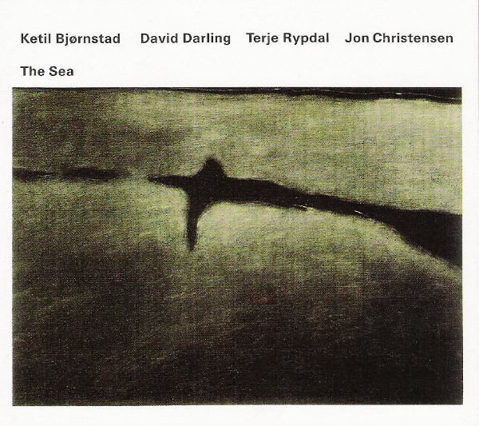

CD
The Sea
Ketil Bjørnstad / David Darling / Terje Rypdal / Jon Christensen
Media: M · Sleeve: M
CA$33.00
Discogs SuggestedCA$36.61
Discogs MedianCA$36.61
Discogs HighCA$36.61
- Physical Copy ID
- BB-CD-1683
- Year
- 1995
- Label
- ECM Records, ECM Records
- Catalog #
- ECM 1545, 521718-2
- Country
- DEGermany
- Genre / Style
- Jazz · Contemporary Jazz
brand new - in shrink wrap